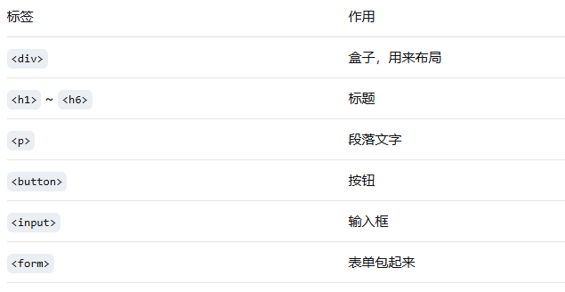
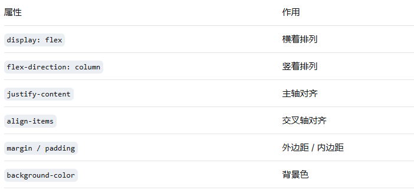
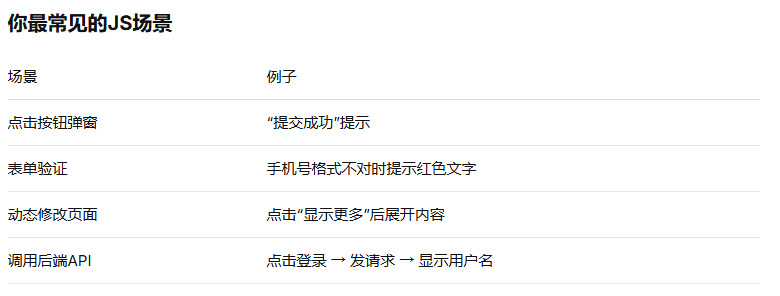
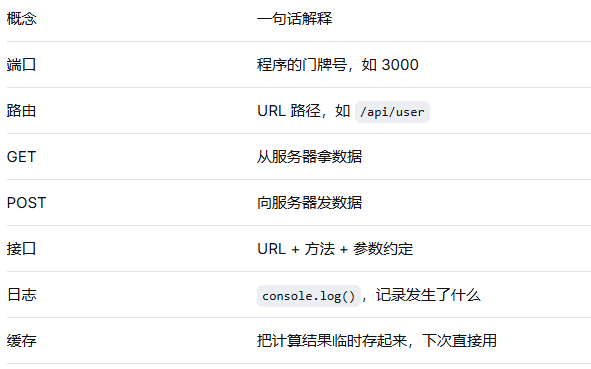

Part 01
第一部分：基础学习路径
基础认知 + 前端 + 后端 + 数据库
- 1基础认知
- 2前端基础
- 3后端基础改
- 4数据库基础
主题介绍 · 从页面结构到交互开发
这门课先从基础认知出发，理解前端、后端、数据库和 API 的关系，再进入 HTML、CSS、JavaScript 这些前端基础技术。
这一页对应文档里的 [第一页]，先把两大部分讲清楚：基础学习路径，以及前端基础技术（基础入门）。
用一个最常见的登录场景，把前端、后端、数据库和 API 的关系串起来。
前端负责接收输入和展示结果，后端负责处理逻辑和判断，数据库负责保存和查询数据，API 负责把请求和响应在各层之间传递。
先讲结构层，先搞清楚页面“有什么”。
HTML 通过标签和语义定义页面骨架，决定标题、段落、按钮、输入框、图片等内容如何组织。

<html>
<head>
<title>页面标题</title>
</head>
<body>
<h1>我是标题</h1>
<p>我是段落</p>
<button>按钮</button>
</body>
</html>
第二页只讲样式层，重点理解页面“长什么样”。
CSS 负责颜色、间距、大小、布局和响应式，是把 HTML 的内容变成可阅读、可展示界面的关键。


.pad {
margin-top: 10px;
margin-bottom: 10px;
margin-left: 20px;
margin-right: 20px;
}
.pad-1 {
margin: 10px 20px 10px 20px;
}
.pad-2 {
margin: 10px 20px;
}
第三页单独讲 JS，不再和 HTML / CSS 混在一起。
JavaScript 让网页“活过来”。它可以处理点击事件、切换样式、发起请求、读取返回数据，是前端里最直接和用户交互的一层。

html：
<h2 id="title">我是标题</h2>
<button onclick="changeColor()">点击变色</button>
JS：
//JS 部分：实现交互功能
//1. 切换标题颜色
function changeColor() {
let title = document.getElementById("title");
if (title.style.color === "red") {
title.style.color = "blue";
} else {
title.style.color = "red";
}
}
async function getRequest() {
const url = "https://jsonplaceholder.typicode.com/users?id=1&name=test";
const res = await fetch(url);
const data = await res.json();
return data;
}
理解 GET 和 POST 的差别，是入门后端和接口交互最基础的一步。
后端接收前端传来的请求，处理逻辑后返回响应。不同请求方式适用于不同场景，查询用 GET，提交和修改通常用 POST。

| 对比维度 | GET 请求 | POST 请求 | | -------- | ----------------------------- | -------------------------- | | 传参方式 | 参数拼接在 URL 地址栏 | 参数放在请求体 body 中 | | 数据长度 | 受浏览器URL长度限制，传参短小 | 无长度限制，可传大量数据 | | 安全性 | 参数暴露在地址栏，不安全 | 参数隐藏在请求体，相对安全 | | 缓存 | 默认会被浏览器缓存 | 默认不缓存 | | 使用场景 | 查询、获取数据（无数据修改） | 提交、新增、修改数据 |
前端界面上的内容要真正落地，最终还是要靠数据库保存。
数据库是前端、后端之外的第三个关键部分。数据能永久保存，业务才能“下次打开还在”。SQLite、MySQL 都是常见的基础数据库。